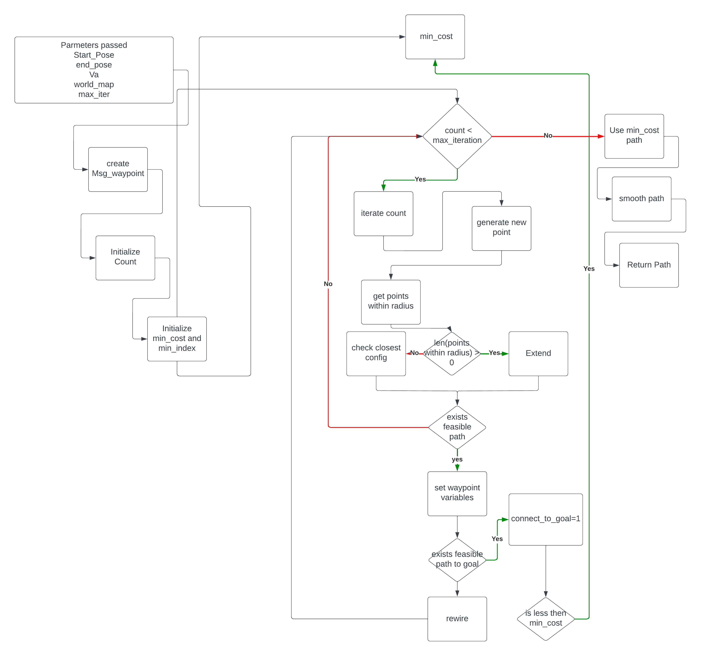
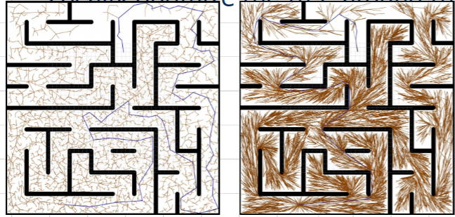
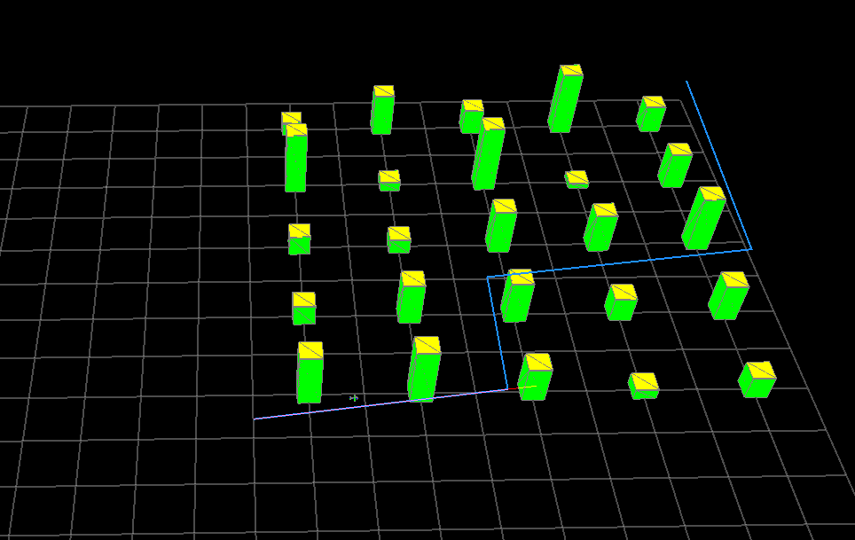
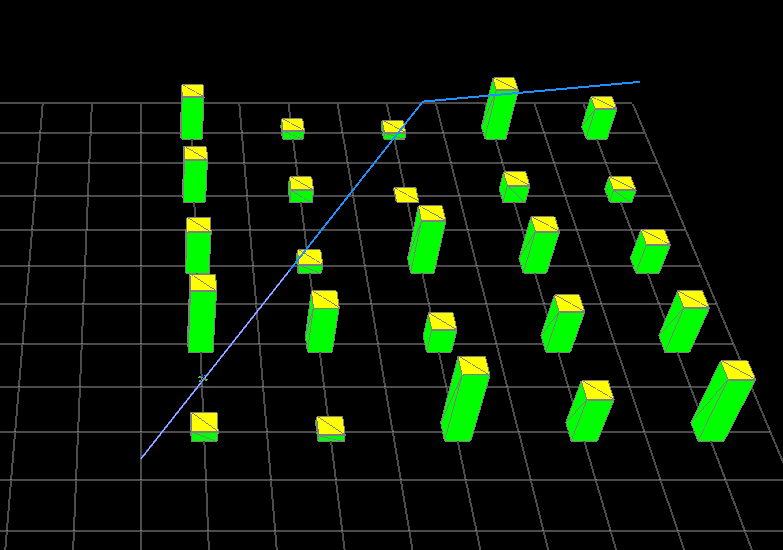
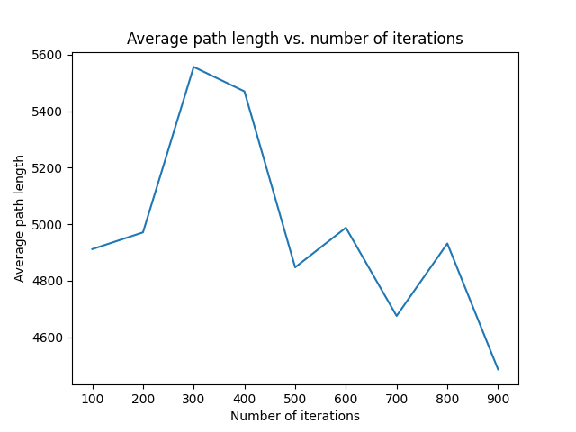

Project Description
This project is extending on work from the USU ECE 5330 class to create an RRT* planner. The primary goal of RRT* is to provide better heuristics for connecting new nodes to graphs that are not greedy in nature, unlike traditional RRT. These improved connection heuristics allow RRT* to converge on true optimality as time goes to infinity, whereas traditional RRT does not provide such a guarantee. The implementation of Straight Line RRT can cause winding paths that can never converge on the optimal solution. Modifying the Straight Line RRT algorithm is beneficial for UAV planning. The main benefit is that the paths produced by the RRT* planner provide straighter and more energy-efficient paths that are easier to follow. This allows a given UAV to traverse more ground and waste less energy traversing a specified area.
Project Details
Extend Algorithm
The first change involves the addition of a randomly configured point to the existing tree. In traditional RRT, a point is randomly selected and placed into the graph by selecting the node with the shortest distance to the randomly placed point. In RRT*, the point is connected to the node which minimizes the overall cost to reach the new node located at the randomly placed point within a pre-determined radius.
Rewire Algorithm
The second modification comes after the new point has been added to the graph. With the radius defined within the extended algorithm, this new algorithm looks at each node within this radius and determines whether the cost would be minimized by making the parent of that node the new node added in the extended algorithm. After a given node is rewired, it must update the costs of all its children.
Algorithm Code Diagram
Expected and Actual Results
The anticipated outcome of utilizing the RRT* algorithm is expected to generate straighter paths, as opposed to the convoluted ones that the conventional RRT algorithm tends to produce. This phenomenon is attributed to the rewire process which enables paths to become straighter by establishing the minimum cost of a path as a straight line to the present position. These expected differences are demonstrated in the figure below.
The first figure below shows the results of my already implemented straight-line RRT planner. It can be observed that the planner has a sub-optimal path with several bends in the path instead of driving directly to the goal. The second figure shows the results from the RRT* planner. The difference in optimality can be observed by how few turns the planner has to take. The rewire heuristic allows the UAV to drive directly to the goal with a single turn. With these results, it can be validated that the expected outcomes were achieved.
 Videos of Planner in Action
Python Visualization

ROS Visualization

Verification of Convergence to Optimal Solution
The following figure shows the average path length given a number of iterations. It can be observed that the path length converges to the optimal solution as the number of iterations increases.
